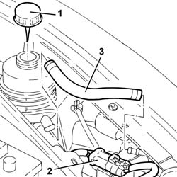
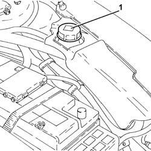
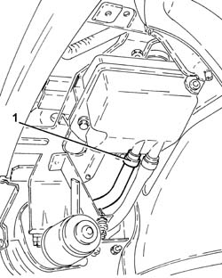
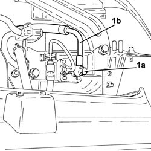
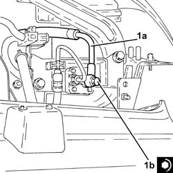
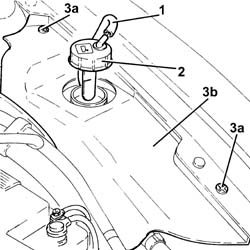
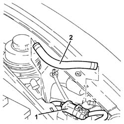

2127C18 pipe from hydraulic circuit fluid reservoir to hydraulic speed selection drive pump - r r
- Path
- Procedures > 21 GEARBOX > 2127 ELECTRO-HYDRAULIC SELECTION. GEARBOX EXTERNAL. CONTROLS > 2127C hydraulic gear selection system > 2127C18 pipe from hydraulic circuit fluid reservoir to hydraulic speed selection drive pump - r r
- Kind
- repair procedure (removal / refitting; the operation number is the code)
- Applies to
- all engines; all production periods
- Interactive page
- https://sloeber94.github.io/elrnDB-a156/en/#/3237947
Applies to: all engines; all production periods; only with equipment: Smart gearbox
 Removing
Removing
 Refitting
Refitting1. Remove the electro-hydraulic gear selection system hydraulic circuit fluid reservoir cap.
Drain the electro-hydraulic gear selection system hydraulic circuit fluid reservoir.
2. Release the electrical connection for the electro-hydraulic gear selection system electric pump from the support.
3. Loosen the fixing bands and remove the pipe between the hydraulic circuit fluid reservoir and the electro-hydraulic gear selection electric pump.

Applies to: all engines; all production periods; only with equipment: Smart gearbox
Refitting
RemovingPlace the pipe between the hydraulic circuit fluid reservoir and the electro-hydraulic gear selection electric pump back in its housing and fix it using the bands.
Fix the electrical connection for the electro-hydraulic gear selection system electric pump to the mounting.
2127C06 Electro-hydraulic selection manual gearbox HYDRAULIC SYSTEM - Bleeding air .
Applies to: engines: 2.0 JTS, 2.0 JTS; all production periods; only with equipment: Smart gearbox
Removing
RefittingPosition the vehicle on the ramp.
Ensure that the ignition key is in OFF position, then disconnect the negative battery terminal.
 | Name | Connector |
|---|---|---|
- | Battery |
1. Remove the electro-hydraulic gear selection system hydraulic circuit fluid reservoir cap.
Drain the electro-hydraulic gear selection system hydraulic circuit fluid reservoir.

Applies to: engines: 2.0 JTS, 2.0 JTS; all production periods; only with equipment: Smart gearbox
Proceed with removal 4450B02 left front wheel r r .
Proceed with removal - 7055B90 Left front WHEEL ARCH LINER - R.R. .
Proceed with removal 7055B54 under-engine guard - r r .
Proceed with removal 5540B16 FRONT LIGHT CLUSTER with direction indicator (one), left or right - R.R. (Left side).
1. Loosen the band and disconnect the pipe between the hydraulic circuit fluid reservoir and the electro-hydraulic gear selection electric pump, reservoir side.

Applies to: engines: 2.0 JTS, 2.0 JTS; all production periods; only with equipment: Smart gearbox
1. Working in the housing created by removing the light cluster, undo the connector (1a) and disconnect the pipe between the hydraulic circuit fluid reservoir and the electro-hydraulic gear selection electric pump (1b), electric pump side and remove it.

Applies to: engines: 2.0 JTS, 2.0 JTS; all production periods; only with equipment: Smart gearbox
Refitting
Removing1. Place the pipe from the hydraulic circuit fluid reservoir to the electro-hydraulic gear selection electric pump (1a) back in its housing, connect it to the pump and tighten the connector (1b) to the recommended torque.
Applies to: engines: 2.0 JTS, 2.0 JTS; all production periods; only with equipment: Smart gearbox
 | Fastening | Component | Ø | Value (daNm) |
|---|---|---|---|---|
1b | Connector | PIPE FROM RESERVOIR TO PUMP | M14 | (Pump side) 0.8 ÷ 1.3 |

Applies to: engines: 2.0 JTS, 2.0 JTS; all production periods; only with equipment: Smart gearbox
Connect the pipe between the hydraulic circuit fluid reservoir and the electro-hydraulic gear selection electric pump, reservoir side, and tighten the band.
Proceed with the refitting 5540B16 FRONT LIGHT CLUSTER with direction indicator (one), left or right - R.R. (Left side).
Proceed with refitting 7055B54 under-engine guard - r r .
Proceed with refitting - 7055B90 Left front WHEEL ARCH LINER - R.R. .
Proceed with refitting 4450B02 left front wheel r r .
Proceed with refitting 2127C04 ELECTROHYDRAULIC selection gearbox hydraulic system FLUID - Check level and top up if necessary. .
Proceed with refitting 2127C06 Electro-hydraulic selection manual gearbox HYDRAULIC SYSTEM - Bleeding air .
Connect the negative (-) battery terminal.
Remove the car from the ramps.
Applies to: engines: 3.2 V6; all production periods; only with equipment: Smart gearbox
Removing
Refitting1. Disconnect the breather pipe from the electro-hydraulic selection gearbox hydraulic circuit fluid reservoir cap.
2. Undo the electro-hydraulic selection gearbox hydraulic circuit fluid reservoir cap and remove it.
Drain the electro-hydraulic selection gearbox hydraulic circuit fluid reservoir using a suitable syringe.
3. Undo the bolts (3a) and remove the protection (3b).

Applies to: engines: 3.2 V6; all production periods; only with equipment: Smart gearbox
1. Release the electrical connection for the electro-hydraulic gear selection system electric pump from the support.
2. Loosen the fixing bands and remove the pipe between the hydraulic circuit fluid reservoir and the electro-hydraulic gear selection electric pump.

Applies to: engines: 3.2 V6; all production periods; only with equipment: Smart gearbox
Refitting
RemovingPlace the pipe between the hydraulic circuit fluid reservoir and the electro-hydraulic gear selection electric pump back in its housing and fix it using the bands.
Fix the electrical connection for the electro-hydraulic gear selection system electric pump to the mounting.
Place the protection back in its housing and secure it using the bolt.
Place the electro-hydraulic selection gearbox hydraulic circuit fluid reservoir cap back in its housing.
Connect the breather pipe to the electro-hydraulic selection gearbox hydraulic circuit fluid reservoir cap.
Proceed with refitting - 0010T47 hydraulic system fluid for gearbox with hydraulic selection check level and top up if necessary .
Proceed with refitting - 0010T48 hydraulic system for gearbox with hydraulic selection bleed air .
Topics linked from this page (6)
- 2127C04 ELECTROHYDRAULIC selection gearbox hydraulic system FLUID - Check level and top up if necessary.
- 2127C06 Electro-hydraulic selection manual gearbox HYDRAULIC SYSTEM - Bleeding air
- 4450B02 left front wheel r r
- 5540B16 FRONT LIGHT CLUSTER with direction indicator (one), left or right - R.R.
- 7055B54 under-engine guard - r r
- A1B Battery ( BATTERY NEGATIVE )